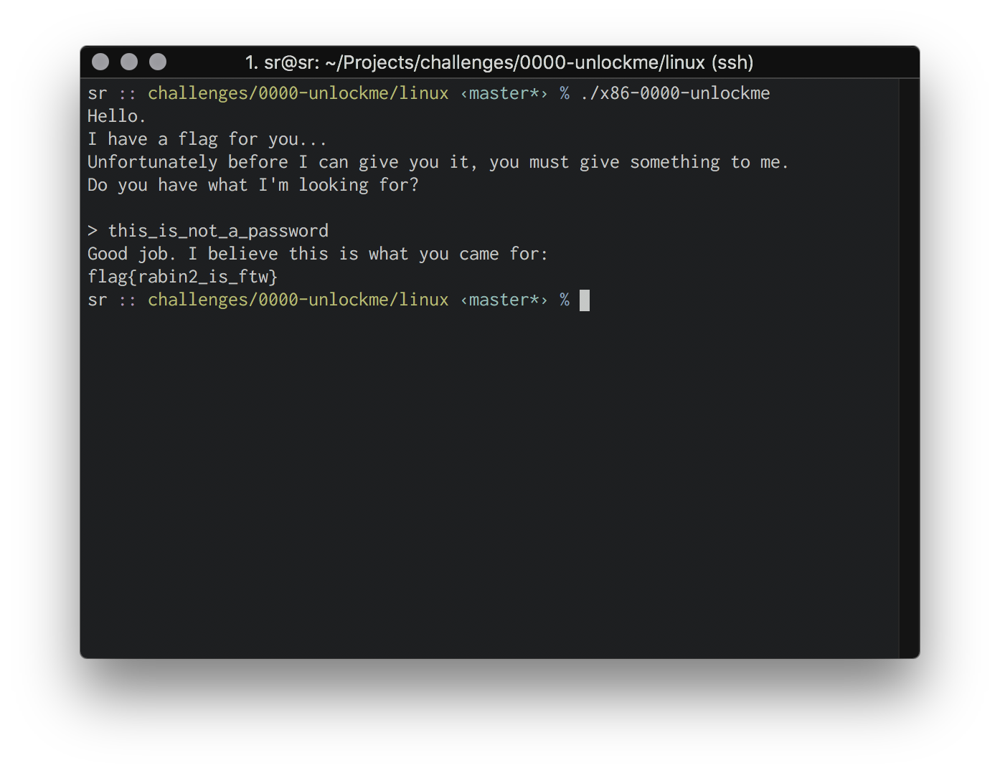

A Practical Introduction to Radare2 - Static Analysis
This article focuses on the analysis of a Linux executable using radare2. If you're not using Linux, you can still analyze ELF binaries with radare2 out of the box. The best way to install radare2 is from source at github.com/radare/radare2
The executable we're analyzing is not especially difficult to crack. This is because we are focused less on the binary's challenge and more around the different approaches for static analysis using r2. For this tutorial we will use the stackrip starter binary x86-0000-unlockme.
This is an x86 ELF binary which slowly types a request for a password when executed.
The binary suggests using rabin2. This is a radare2 binary examination tool. When used with the -z flag it finds and prints all human readable strings from the data section of the binary.
$ rabin2 -z ./x86-0000-unlockme
000 0x000008b0 0x080488b0 22 23 (.rodata) ascii this_is_not_a_password
001 0x000008c8 0x080488c8 32 33 (.rodata) ascii Hello.\nI have a flag for you...\n
002 0x000008ec 0x080488ec 71 72 (.rodata) ascii Unfortunately before I can give you it, you must give something to me.\n
003 0x00000934 0x08048934 35 36 (.rodata) ascii Do you have what I'm looking for?\n\n
004 0x0000095c 0x0804895c 47 48 (.rodata) ascii Good job. I believe this is what you came for:\n
005 0x0000098c 0x0804898c 51 52 (.rodata) ascii Hmm. I don't think this is what I was looking for.\n
006 0x000009c0 0x080489c0 36 37 (.rodata) ascii Take a look inside of me. rabin2 -z\n
There's no flag provided in the data section, but we can now see the success message and a new string "this_is_not_a_password" which looks promising.
We can further analyze the binary using the rabin2 -I command which provides helpful information around the security and structure of the file.
$ rabin2 -I ./x86-0000-unlockme
arch x86
binsz 6621
bintype elf
bits 32
canary false
class ELF32
crypto false
endian little
havecode true
intrp /lib/ld-linux.so.2
lang c
linenum true
lsyms true
machine Intel 80386
maxopsz 16
minopsz 1
nx true
os linux
pcalign 0
pic false
relocs true
relro partial
rpath NONE
static false
stripped false
subsys linux
va true
Running rabin2 shows this is an x86 binary with no stack canary and the "nx", or no-execute bit, is enabled. We also see there is no position independence set and symbols are not stripped. This is all great news for finding vulnerabilities.
It's time to put the binary into r2. We'll prepare the binary for static analysis by running r2 -AA ./x86-0000-unlockme. Running this will perform analysis over the binary and drop us into a r2 prompt showing the current seek address in the binary.
Let's take a look at the functions used by the binary using the afl or "analyze function list" command.
[0x08048540]> afl
0x08048438 3 35 sym._init
0x08048470 1 6 sym.imp.setbuf
0x08048480 1 6 sym.imp.strcmp
0x08048490 1 6 sym.imp.printf
0x080484a0 1 6 sym.imp.free
0x080484b0 1 6 sym.imp.fgets
0x080484c0 1 6 sym.imp.sleep
0x080484d0 1 6 sym.imp.usleep
0x080484e0 1 6 sym.imp.malloc
0x080484f0 1 6 sym.imp.puts
0x08048500 1 6 sym.imp.strlen
0x08048510 1 6 sym.imp.__libc_start_main
0x08048520 1 6 sym.imp.putchar
0x08048530 1 6 sub.__gmon_start_530
0x08048540 1 33 entry0
0x08048570 1 4 sym.__x86.get_pc_thunk.bx
0x08048580 4 43 sym.deregister_tm_clones
0x080485b0 4 53 sym.register_tm_clones
0x080485f0 3 30 sym.__do_global_dtors_aux
0x08048610 4 43 -> 40 entry1.init
0x0804863b 4 104 main
0x080486a3 4 91 sym.print_intro
0x080486fe 4 80 sym.slow_type
0x0804874e 4 125 sym.check_password
0x080487cb 1 93 sym.print_flag
0x08048830 4 93 sym.__libc_csu_init
0x08048890 1 2 sym.__libc_csu_fini
0x08048894 1 20 sym._fini
Right away we see the sym.check_password and sym.print_flag functions. Both of which likely contain our solution and are certainly helpful, but we came here to learn, not to win. To avoid spoilers, we will seek to the main function and try to determine the flow of this application from the start. We can seek to the main function in r2 using the
s main command. Let's print the disassembly of this function to see the inner workings using the pdf or "print disassembly of function" command.
This function makes a call to sym.print_intro which we can safely assume
prints the welcome message, then calls sym.check_password. Next it tests sym.check_password's return value held in the eax register. If eax is zero, we jump to the failure message we saw earlier. If it's not, we continue to the next line which says good job and calls the sym.print_flag function. The goal appears to be to get sym.check_password to return 1.
We'll seek to sym.check_password and see what's
going on inside by running s sym.check_password and pdf.
It calls fgets to read user input into ebx - 0x107. It then writes a null-terminator
to the value of a strlen call offset by ebx - 0x107. This is same offset holding our
fgets result. These instructions appear to swap the final character of our fgets string, which is always
a newline, with a null terminator.
Lastly, this function calls strcmp with two arguments: our newline-stripped fgets input
and a reference to an object called the_password.
Radare2 helpfully displays the ascii representation of this value and we can see
it's the string we saw earlier: "this_is_not_a_password". I'm starting to suspect
this may be the password.
Our function ends by checking if the result of strcmp is 0. If it is, it
sets eax to 1, otherwise it sets eax to
0. As we learned earlier, our goal is to have this function set eax to 1. This proves the password must be
"this_is_not_a_password".
Running the binary with the new password flag confirms this is true. 
We've already beaten this trivial crackme, but let's take a look at how the flag
is provided for extra credit. If we seek and print sym.print_flag we can see the
function calls malloc with a 255 byte buffer. It then manually moves little endian ordered
bytes onto this buffer as 5 separate dwords. Each dword chunk is a subset of our
flag. Finally it pushes the address of the malloc buffer onto the stack and calls puts.
The function finally frees the pointer and returns.